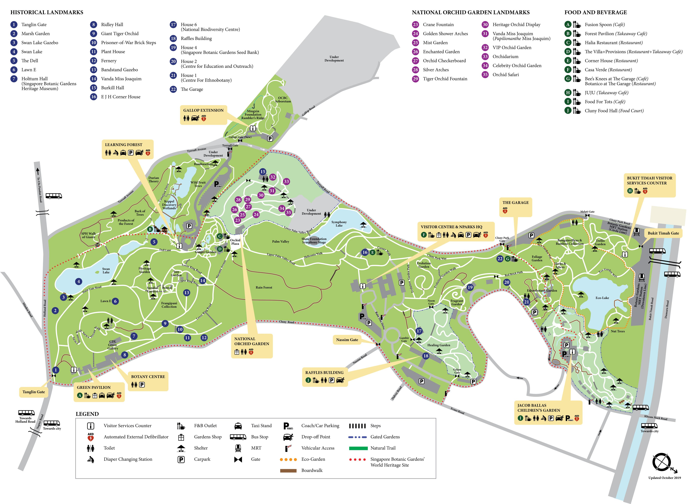

It stands today with over a 150 years of history as a UNESCO World Heritage Site
The Botanic Gardens is a suitable place for people of all ages. Offering an array of vibrant gardens and rich educational experiences, visiting the Singapore Botanic Gardens will definitely be a trip worth while. There are 4 entrance points (i.e. Tanglin Entrance, Tyersall Gallop Entrance, Nassim Entrance, Bukit Timah Entrance) located in close proximity to public transport, making entry to Singapore Botanic Gardens very convenient.
Here are some Attractions to look out for:
1. Tanglin Entrance
Attractions Nearby:
2. Tyersall Gallop Entrance
Attractions Nearby:
3. Nassim Entrance
Attractions Nearby:
4. Bukit Timah Entrance
Attractions Nearby:
MAP:

For more details please visit:
How to get to Singapore Botanic Gardens?
Public Transport:
Orchard MRT (NS22); Transfer to Bus and alight at Napier Road (Tanglin Entrance)